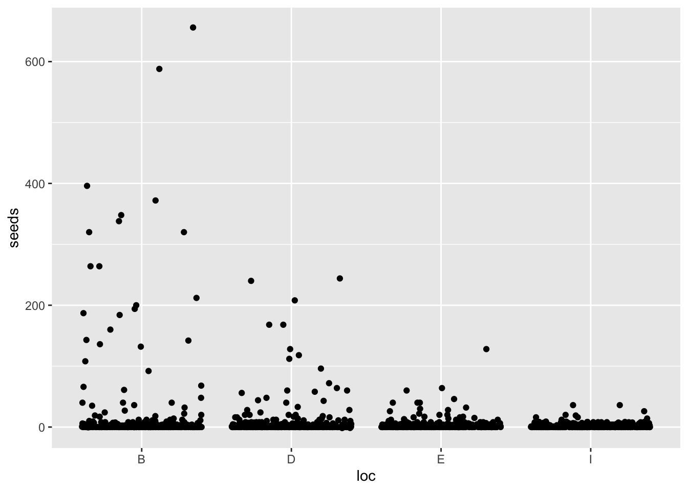
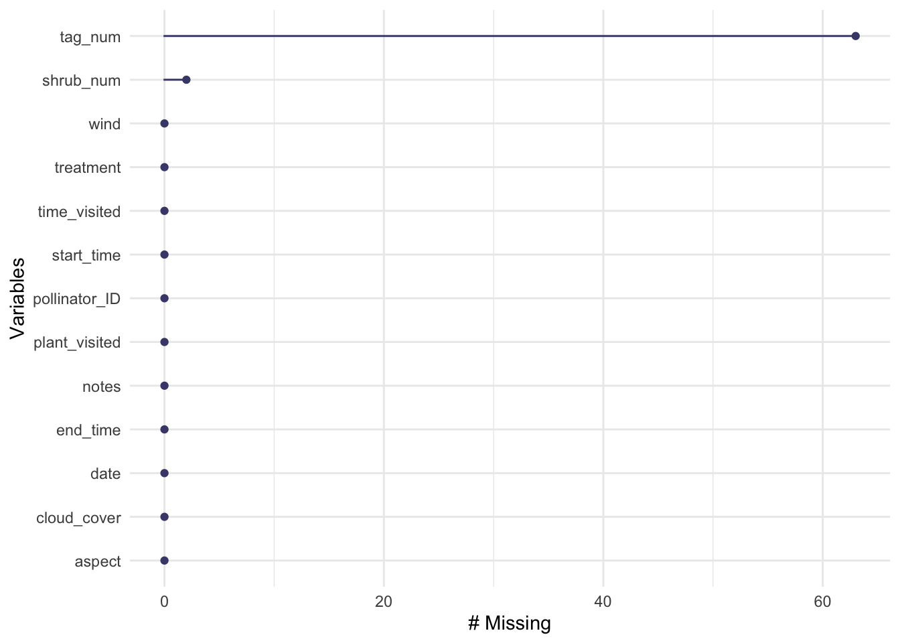
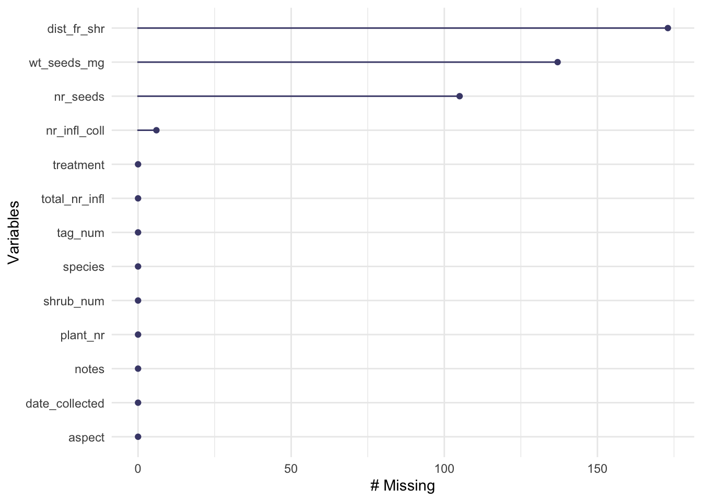
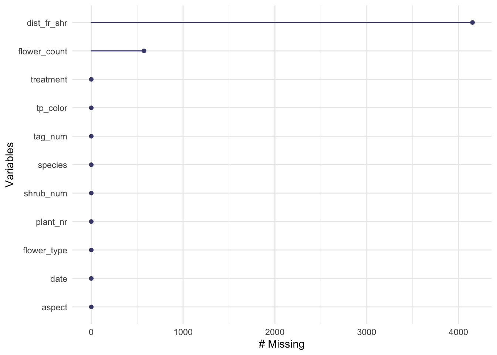
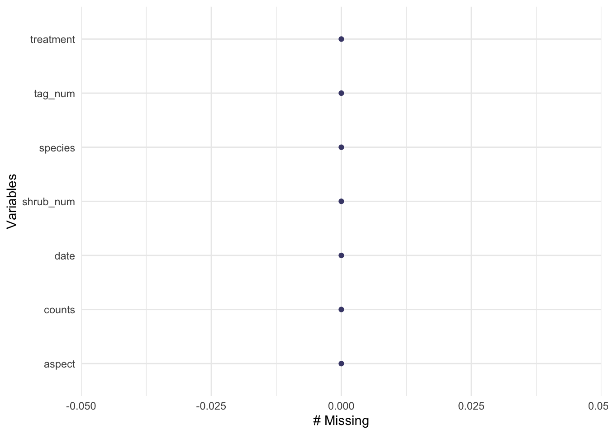
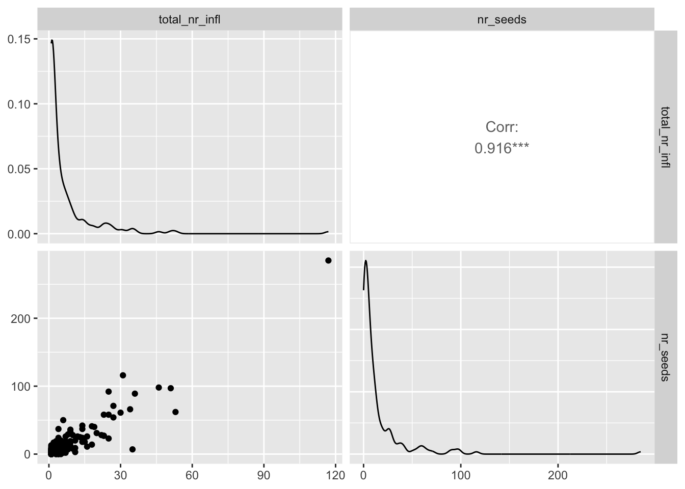
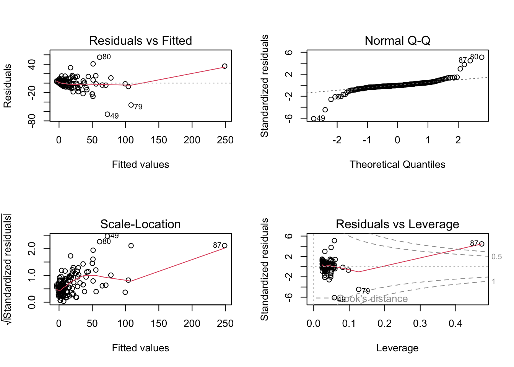

Code
knitr::opts_chunk$set(echo = TRUE, message = FALSE, warning = FALSE)Problem #1: How does total seed number differ between kangaroo rat mound locations?
Summary of context article (The Composition of seed banks) Rat mound creates micro-environments that can effect seed banks or number of seeds, studies tend to show that there are more seeds around mounds
Data Dictionary:
mnd: kangaroo rat mound (location)
dir: direction from center of the mound
loc: microhabitat (B = base, S = surrounding, E = edge, I = interspace)
species: four letter code for target taxa
seeds: seed counts for species and percent cover for physical variables
Problem #2: How does seed count vary with plot type (shrub or open), plant species, and total number of inflorescences? Is there a simpler model that explains seed count, and if so, what is it?
Summary: Because of climate change “shrubfication is happening in the tundra, where more shrubs are growing in the tundra, which would effect the ecosystem there. On average, there are more flowers in open plots vs shrub plots. Shrub plots are plots that have undergone shrubfication. Open plots have not experienced shrubfication yet.
Data Table/Dictionary
pollinator: observations of pollinators visiting plots
shrub_num: shrub ID
treatment: open or shrub plot
pollinator_ID: what type of pollinator
cloud_cover: “rough % cloud cover” - whatever that means
wind: wind speed (mph) - probably because it affects pollinators
seed_ctwt
species_ID: what plant
plant_nr: plant number, what number 1-5 plant was assigned to
total_nr_infl: total number of inflorescenses
nr_infl_coll: number of inforesecenses collected
nr_seeds: seed numbers
wt_seeds_mg: seed weights
individual_flower
community_flower
Siting data:
problem one data: (T. Koontz and Simpson 2013)
problem one context: (T. L. Koontz and Simpson 2010)
problem two data: (Seaver 2022)
knitr::opts_chunk$set(echo = TRUE, message = FALSE, warning = FALSE)library(here)
library(naniar)
library(tidyverse)
library(GGally)
library(tidyr)
library(corrplot)#Load in Problem 1 data
kangaroo_rat <- here("data", "sev208_kratseedbank_20120213.txt") |> #File path
read.csv(header= TRUE, sep =",", quote = "") #Has header, delimiter is comma, no quoting
#Load in Problem 2 data
pollinator <- here("data", "shrubstudy_pollinator.ms.data.csv") |>
read.csv()
seed_ctwt <- here("data", "shrubstudy_seed_ctwt.ms.data.csv") |>
read.csv()
individual_flower <- here("data", "shrubstudy_individual_flower_counts.ms.data.csv") |>
read.csv()
community_flower <- here("data", "shrubstudy_community_flower_counts.ms.data.csv") |>
read.csv()#Missing data check
kangaroo_rat_missing <- vis_miss(kangaroo_rat) #No data missing#Exploratory data visualization, quite hard to tell the relationship between location and number of seeds, there are a lot of data clustered at zero
ggplot(data = kangaroo_rat, aes(x = loc, y = seeds)) + geom_jitter()
#Create model to further explore relationship
modelobject <- lm(seeds ~ loc, data = kangaroo_rat)
#Visualize models - diagnostic plots in a grid
par(mfrow = c(2, 2))
plot(modelobject) #Data is not normal 
#Kruskal-Wallis test
model_summary <- summary(modelobject)
model_summary
Call:
lm(formula = seeds ~ loc, data = kangaroo_rat)
Residuals:
Min 1Q Median 3Q Max
-18.27 -7.38 -3.29 -1.41 638.23
Coefficients:
Estimate Std. Error t value Pr(>|t|)
(Intercept) 17.774 1.905 9.331 < 2e-16 ***
locD -10.397 2.694 -3.860 0.000118 ***
locE -14.487 2.694 -5.378 8.68e-08 ***
locI -16.115 2.694 -5.982 2.72e-09 ***
---
Signif. codes: 0 '***' 0.001 '**' 0.01 '*' 0.05 '.' 0.1 ' ' 1
Residual standard error: 37.62 on 1556 degrees of freedom
Multiple R-squared: 0.02713, Adjusted R-squared: 0.02526
F-statistic: 14.46 on 3 and 1556 DF, p-value: 2.697e-09kruskal.test(seeds ~ loc, data = kangaroo_rat) #p-value very small, evidence to reject the null, evidence that there is a difference in seed numbers among the mound locations
Kruskal-Wallis rank sum test
data: seeds by loc
Kruskal-Wallis chi-squared = 21.932, df = 3, p-value = 6.738e-05gg_miss_var(pollinator) #Most of tag_num missing
gg_miss_var(seed_ctwt) #Most of dist_fr_shr, wt_seeds_mg, nr_seeds missing
gg_miss_var(individual_flower) #dist_fr_shr missing, some flower count missing
gg_miss_var(community_flower) #No missing data
#Clean data
seed_ctwt_subset <- seed_ctwt |>
select(c("treatment", "species", "total_nr_infl", "nr_seeds")) |> #Plot type, plant species, total number of inflorescences - select relevant columns
drop_na(nr_seeds) #Thats a lot of data missing... should we do anything?
#Not quite sure what the total number of inflorescences vs inflorescence collected means#Delete this?
#Calculate Pearson's r for numerical values only
seed_cor <- seed_ctwt_subset |>
dplyr::select(total_nr_infl:nr_seeds) |> #Not sure if this is correct
cor(method = "pearson")
#Create correlation plot
corrplot(seed_cor,
method = "ellipse", #Change shape of item in cells
addCoef.col = "black") #Add coefficient in black text
seed_ctwt_subset |>
dplyr::select(total_nr_infl:nr_seeds) |> #Not sure if this is correct either
ggpairs()
#Create a null and a full model - fit multiple linear models in order to see which one is best
null <- lm(nr_seeds ~ 1, data = seed_ctwt_subset)
#Assume no relationship between total mass and predictor variables
#1 indicates absence of all other predictors
full <- lm(nr_seeds ~ treatment + species + total_nr_infl, data = seed_ctwt_subset)
#Assume predictor variables can predict biomasspar(mfrow = c(2, 2))
plot(full) #DATA IS NOT NORMAL CANNOT DO MULTIPLE LINEAR REGRESSION 
How does seed count vary with plot type (shrub or open), plant species, and total number of inflorescences? Is there a simpler model that explains seed count, and if so, what is it?